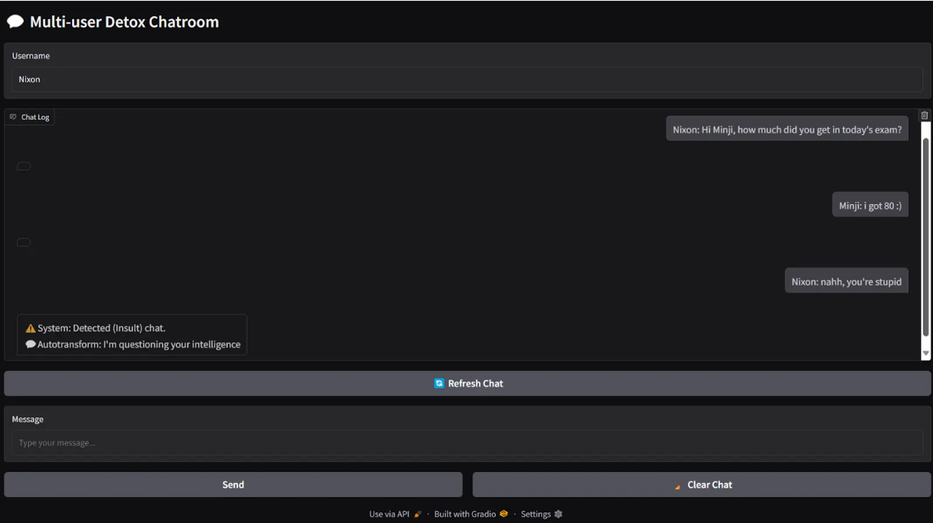

Case study 03 · NLP project
Classify & Detoxify
A chat filter that rewrites toxic comments into polite ones with the same meaning, instead of just deleting them.
- Role
- Machine learning, team of 2
- When
- Apr 2025
- Stack
- RoBERTa, LLaMA 3.1 8B, QLoRA (Unsloth), Hugging Face, Gradio
- Write-up
- Medium
94.5%accuracy on held-out data
0.945weighted F1
8Bparameter model, fine-tuned on one GPU

What I did
- Fine-tuned RoBERTa to label comments as insult, threat, sexual harassment or non-toxic. It reached 94.5% accuracy on a held-out 20% of the data.
- Fine-tuned LLaMA 3.1 8B to rewrite the toxic ones politely. QLoRA (4-bit weights plus small adapters, through Unsloth) made it fit on a single GPU.
- Evaluated the rewrites with ROUGE-L and by reading them. People preferred ours over baselines that scored higher on ROUGE.
- Built a multi-user chat room in Gradio as the demo.